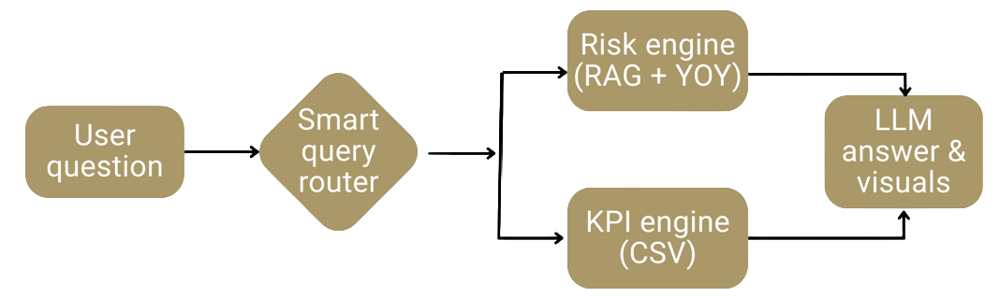

RiskLens
Overview
RiskLens is a chatbot built on a retrieval-augmented generation (RAG) architecture to automate 10-K analysis. It retrieves evidence directly from SEC filings, computes KPIs from XBRL data, and returns cited answers that are faster and more reliable than manual review or general-purpose AI.
The system is designed to reduce hallucinations by grounding responses in retrieved 10-K text and reproducible KPI calculations, while improving speed, accuracy, and consistency across companies and years.
The Problem
10-K analysis is slow, manual, and inconsistent.
Analysts often spend hours:
- Searching dense filings to find relevant risk disclosures
- Comparing Item 1A risk language year over year
- Extracting and calculating KPIs from XBRL tables manually
- Writing summaries without a clean audit trail back to the source text
This creates delays, increases cost, and makes it hard to scale across multiple companies and periods.
The Solution
RiskLens combines two ideas into a single workflow:
- RAG for grounded risk analysis - Instead of relying on the model's memory, RiskLens retrieves the most relevant Item 1A passages from a curated, year-aligned corpus and uses those passages as the evidence for the answer. This produces verifiable, cited outputs and reduces hallucinations.
- Structured KPI computation from XBRL - KPIs are computed directly from SEC XBRL data stored locally. The model does not "guess" numbers. It summarizes results that come from reproducible calculations.
The result is a chatbot that can answer risk and KPI questions in plain English, with citations back to the filing text and consistent KPI definitions.
What RiskLens Does
- Answers analyst questions using a RAG-based retrieval workflow grounded in SEC filings
- Returns audit-ready citations that link insights back to 10-K evidence
- Detects year-over-year changes in Item 1A risk disclosures
- Computes financial KPIs directly from SEC XBRL to ensure numeric consistency
- Produces plain-English summaries and visuals for faster review
Architecture Overview
RiskLens is a RAG chatbot with a smart router and two specialized engines.
When a user asks a question, the router classifies intent and routes the request to one of the following:
- Risk engine (RAG + YOY) - Retrieves top-matching Item 1A passages from a year-aligned risk corpus, identifies year-over-year changes, and sends evidence to the LLM for a cited summary.
- KPI engine (structured data) - Queries locally stored KPI tables derived from SEC XBRL data, computes trends and comparisons, and returns reproducible numeric results.
The LLM is used only as a synthesis layer. It combines retrieved evidence and computed KPIs to generate answers and visuals, with citations that trace back to the original filings.
This design reduces hallucinations, improves accuracy, and returns answers in seconds.
Pilot and Validation
RiskLens was piloted using 10-K filings from four large-cap US pharmaceutical companies across four fiscal years.
- 16 analyst-style test cases covering risk, KPI, and hybrid questions
- Overall accuracy of approximately 94 percent
- Each query completed in seconds, enabling rapid review and comparison
The pilot showed strong performance in retrieving the correct Item 1A evidence, detecting meaningful year-over-year changes, and producing KPI outputs consistent with XBRL-based calculations.
Impact
Based on analyst interviews and pilot results:
- Manual 10-K review time reduced from roughly 2 hours per day to 30 minutes
- Approximately 390 analyst hours saved per year
- Estimated productivity gain of about $28,000 per analyst annually
The time saved shifts effort away from searching and copy-pasting toward higher-value analysis such as modeling, valuation, and deeper risk assessment.
My Role
This was a team project developed as part of a graduate practicum.
My primary contributions included:
- Designing and implementing KPI computation from SEC XBRL data
- Building reproducible pipelines with validation controls
- Defining metric logic, consistency checks, and data outputs
- Contributing to system architecture and analytical framing
Tech Stack
- Python with pandas for data processing and analytics
- Local storage for structured and unstructured datasets
- Retrieval pipeline with embeddings to support RAG over Item 1A text
- Modular, file-based design for transparency and auditability
Code is currently private. Documentation, architecture details, and examples are available upon request.